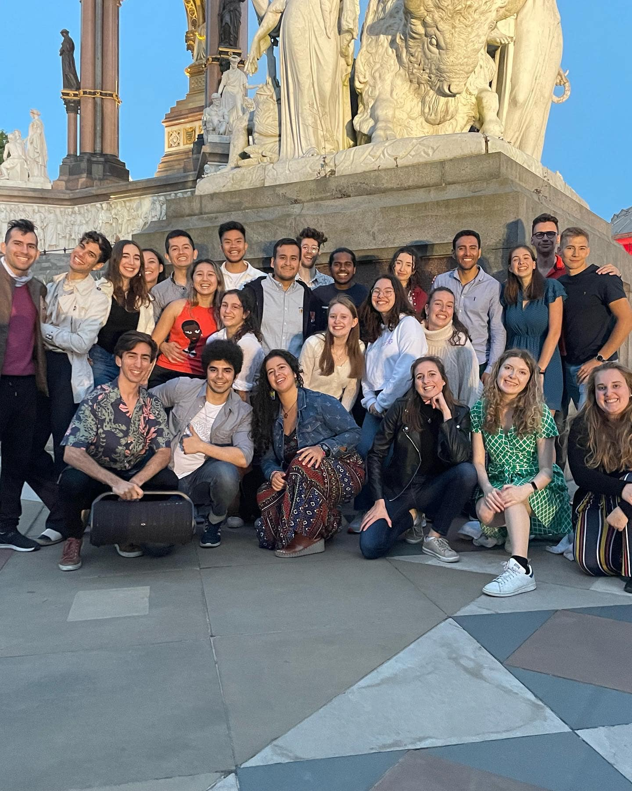
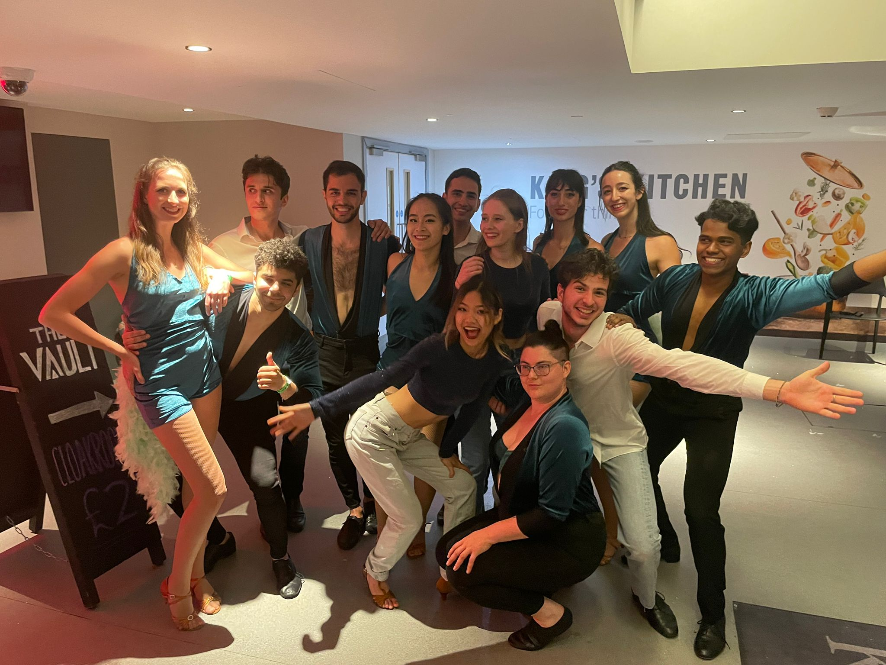
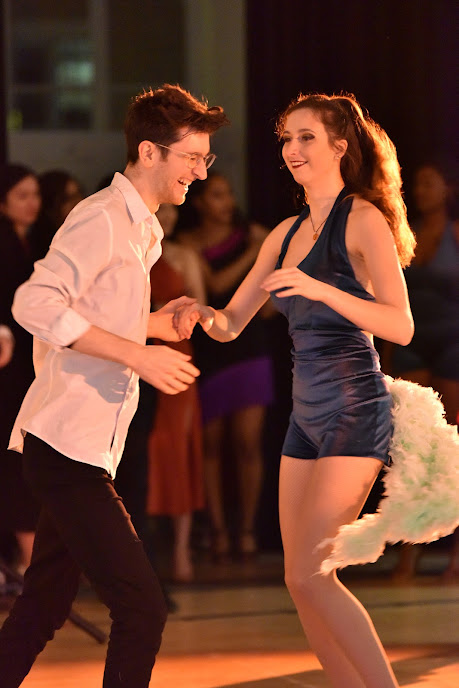
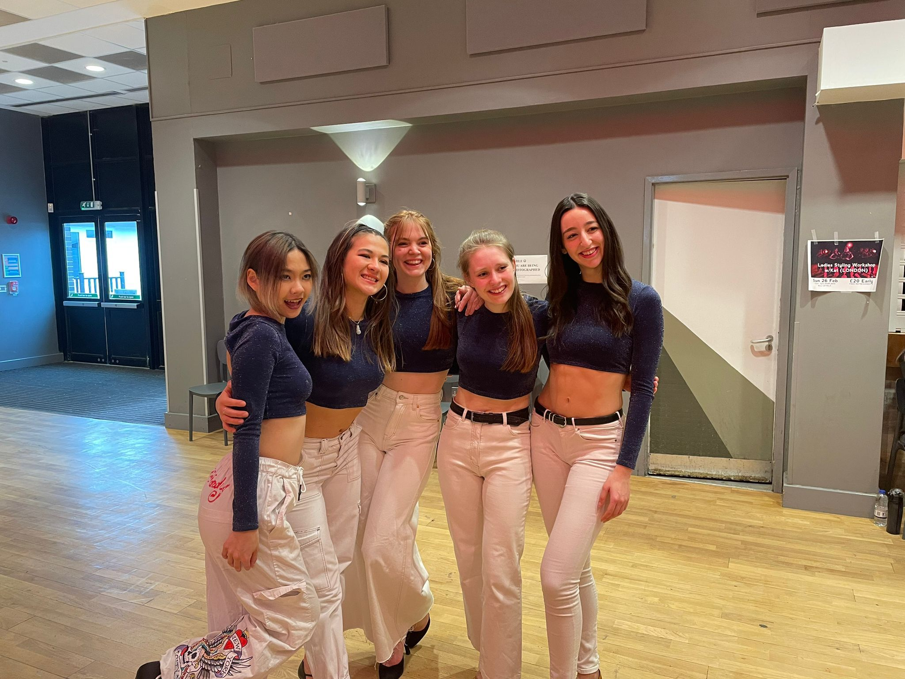
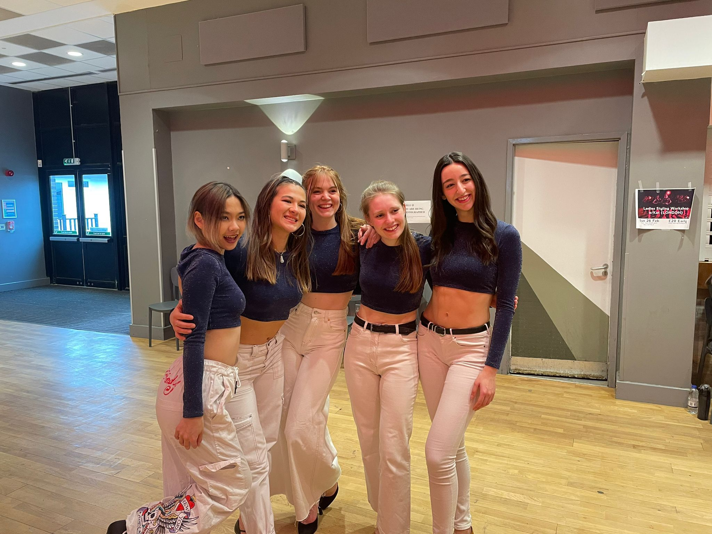

Salsa and Bachata
Our members are a big family - from weekly dance socials to attending festivals across the country and around the world, we build a strong bond with each other. We provide a safe, warm and welcoming environment for new people to join this ever-expanding community, to learn and grow together and pass on the passion and love that is at core of social dancing. Make sure to join us at various social events around London, boat parties, picnics, festivals and more, or even suggest your own, where there’s music, you’ll find us dancing.
Social Classes
Our amazing instructors deliver three hours of social dancing classes every Monday (Salsa) and Friday (Bachata). From 6.15 to 9.15pm, one hour each of beginner, intermediate and advanced level classes provide excellent technique and musicality training.
A perfect opportunity to start from scratch and build a solid foundation, as well as improve and polish your skills by learning the challenging routines and how to apply and integrate them into social dancing. Above all, it’s a friendly and welcoming community to meet new people and just have fun.
- All social classes take place in the JCR. There’s no need to bring a partner or to sign up in advance.
- Please arrive on the hour for class to start at quarter past (i.e. arrive at 6pm for 6.15pm beginners’ class) — this gives us time to sign you in.
Teams
We have a range of teams from our non-auditioned Open Level team to our Advanced Salsa & Bachata teams, which means that there is something for you no matter your level of experience. Each team learns a group dance, choreographed by our amazing coaches which we then perform throughout the year at university competitions, venues around London and sometimes even abroad.
You can join the open level team and sign up for the salsa and bachata team auditions by completing the form here.
Open Level Team
Your chance to experience team choreography and performance, and continue developing the skills you have learned in social classes! A commitment of 1 hour every Sunday to learn from our talented instructor and practice with the team – no auditions and beginners are welcome. A fantastic experience to perform, go to inter-university competitions and join a close-knit, fun and friendly dancing community.
Watch last year’s Open Level team at Reading University’s Salsa Fiesta:
Salsa & Bachata Team
Our Salsa & Bachata teams each have eight couples selected at an audition. These teams train for 1.5 hours with our coach every Sunday and have a 1 hour team practice during the week in term time. Being part of these teams is a wonderful opportunity to improve your technique and performance whilst having fun with a group of friendly and enthusiastic dancers. In addition to this we have an amazing track record at competitions having won Birmingham Dance Club Latino’s Competition 7 times in the last 8 years. Members of this team tend to have some prior dancing experience whether that be salsa, bachata or another style.
Watch the 21/22 Salsa Team’s Birmingham DCL winning performance:
Get in touch
If you have any questions related to Salsa & Bachata, please email dance@imperial.ac.uk or send a message to our Instagram @ic_socialdancers.
The class timetable and information about events will be posted on Instagram and sent to the mailing list, which you can join by clicking here.
Gallery
    
